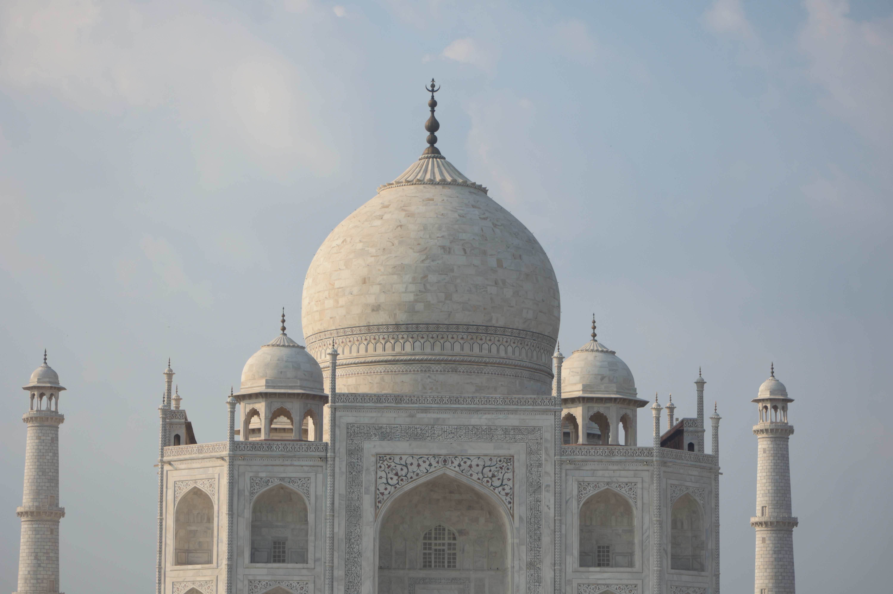
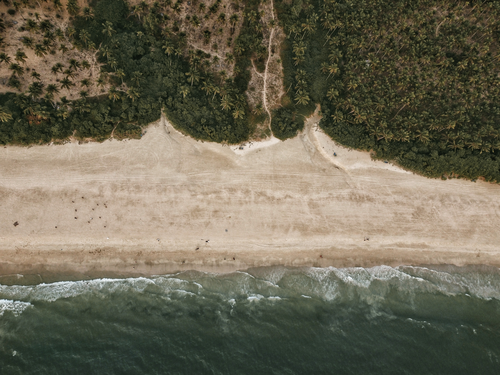
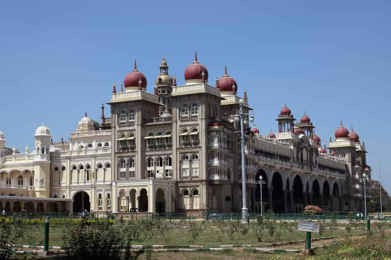

|
HOME | ABOUT | DESTINATION | CONTACT US |
|---|
|  | TajmahalThe Taj Mahal was designated as a UNESCO World Heritage Site in 1983 for being “the jewel of Muslim art in India and one of the universally admired masterpieces of the world's heritage”. It is regarded by many as the best example of Mughal architecture and a symbol of India's rich history. 👈️CLICK THE IMAGE FOR MORE DETAILS |
|---|---|
GoaWith 51 beaches along the coastline, Goa is considered one of the best tourist places to visit in India. Its white sandy beaches, palm trees, low tax rate, amazing coastal cuisine and laid-back attitude make it a wonderful tourist place in India. The best time to visit this place is the winter, as the weather is just perfect (though this is when it can get expensive, too). Apart from the beach, its nightlife is surely not something you should miss. CLICK THE IMAGE FOR MORE DETAILS👉️ |
 |
|  | MysoreMysore, located in Karnataka, was the capital of the Kingdom of Mysore from 1399 to 1947. Mysore is known by many names such as Garden City, Ivory City, City of Yoga and City of Palace. In its center is one of the most visited monuments in India, Mysore Palace, also known as Amba Vilas Palace. This place still holds the rich architecture and culture of the past. 👈️CLICK THE IMAGE FOR MORE DETAILS |
AmritsarFounded by Guru Ram Das in the year 1577, Amritsar is considered the spiritual capital of Sikhism. The holiest gurudwara of the Sikh faith, The Golden Temple is situated at the centre of the old town. It is locally known as Harmandir Sahib Gurudwara. Other popular destinations to visit here are the Akal Takhat and Mata temples. Lassi and chicken tikka are two wonderful dishes to try while in Amritsar. CLICK THE IMAGE FOR MORE DETAILS👉️ |
 |
 |
OotyUdhagamandalam, also known as Ooty, is a hill station in the state of Tamil Nadu. The pleasant climate, the view of India’s Western Ghats and the peaceful atmosphere make a great tourist place for both family and friends. It is famous for its tea plantations, lush gardens, British era bungalows and spicy food. It is usually crowded during the summer holidays, as many families spend a week or two here. 👈️CLICK THE IMAGE FOR MORE DETAILS |